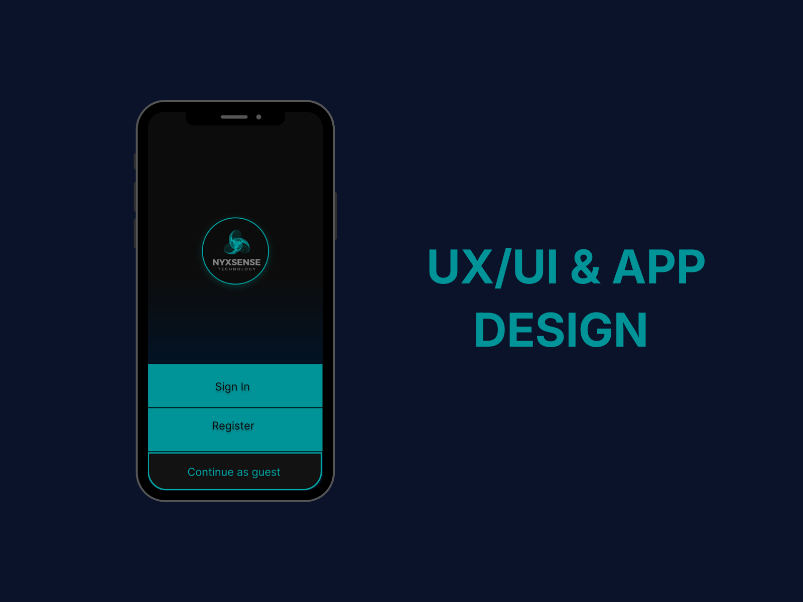
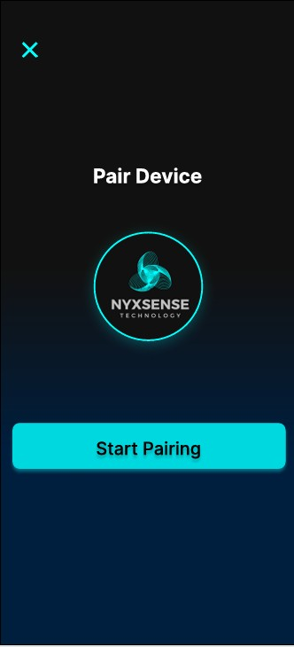
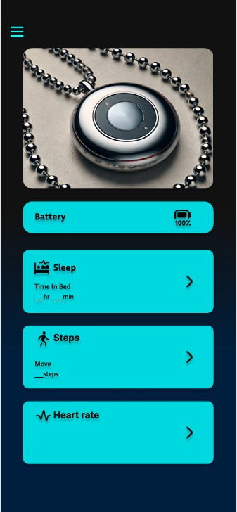
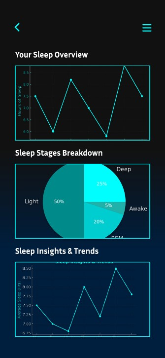
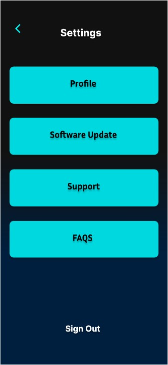
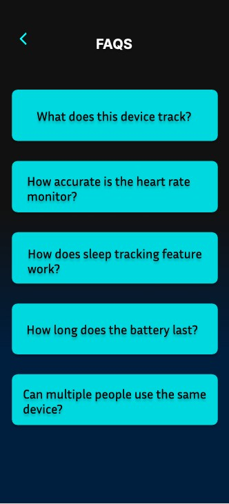
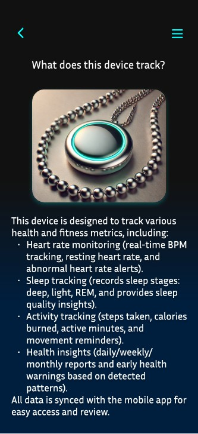

← Back to selected work
UX/UI & App Design
Smart Health Collar
UX/UI Designer and product concept designer for a mobile companion experience connected to a smart health collar.

Designing a companion app for a connected health wearable.
The concept focuses on translating health and device information into a clear mobile experience. The flow covers pairing, dashboard access, sleep insights, FAQs and settings.
Core mobile flow






Design focus
Clear information hierarchy, simple navigation and supportive guidance for health-related information and connected-device interactions.